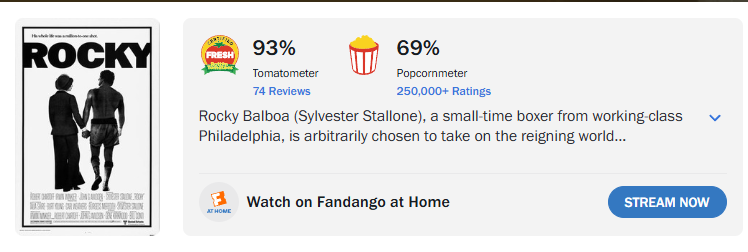
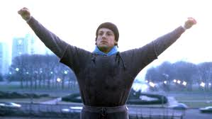
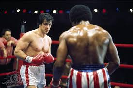
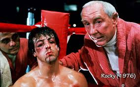
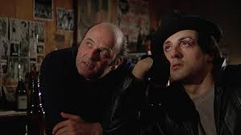
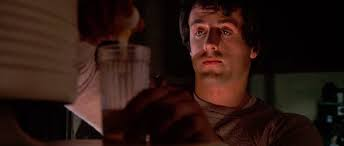
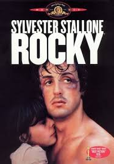
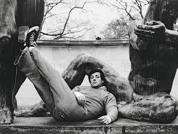
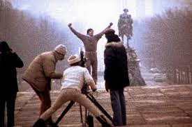
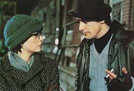

Rocky
Charles LaRose April 22, 2026
The first Rocky film is an American classic. The story is a true Cinderella story. Rocky tells the story of someone who’s given the chance of a lifetime. Something we all dream of. I believe this is why this film franchise has always been my favorite. Each film has it’s own life lesson in a way. It’s even better when you know the backstory of Sylvester Stallone. Stallone is somebody who came from nothing and him even getting to star in this movie was a fight in it’s own right. The film was given a tiny budget and the directors were reluctant to let Sylvester star in it as he was a complete unknown.
Rocky tells the story of a street bum who was given a bad shake in life. He has no family of his own and has to be a loan shark and fight in church boxing matches to make ends meet. The only friend he has is a miserable drunk named Paulie. Rocky’s life changes though when he’s given the opportunity of a lifetime to fight heavyweight champion Apollo Creed. From here on we watch Rocky give it his all and go the distance in his fight with Apollo. Even knocking the champion down and putting up a good fight.
Rocky isn’t just a sports film though. It’s also a love story. Throughout the film we watch Rocky fall in love with Paulie’s sister Adrian. His relationship with Adrian is very pure and relatable to the viewer. I believe this film should be watched by everyone. It is very motivational and will change your perspective on life.
Click for IMDB page


Screenshots from the film and behind the scenes:









Trivia
- Due to the low budget of the film certain production errors had to be built into the story. Famously the color of Rocky's trunks were backwards on a banner in the film. They built in this error to the story to make the mistake appear on accident due to Rocky being a complete unknown.
- Carl Weathers was formerly a NFL player in real life.
- The creation of the steady cam was made on set during production of this film. This filming technique was revolutionary and has been used in tons of films since.